Extended Shader Nodes¶
1. General Eevee Utility Nodes¶
Render Info¶
Entry¶
Add > Input > Render Info
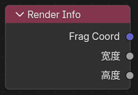
Outputs¶
-
Frag Coord: Screen-space coordinate (xynormalized to 0-1,zis depth) -
Width: Render region width -
Height: Render region height
Purpose¶
Provides the coordinate and pixel size of the current Eevee render window.
Scene Time¶
Entry¶
Add > Input > Scene Time

Input¶
Scale: Value used to scale frame numbers
Outputs¶
-
Frame: Current frame number -
Seconds: Seconds corresponding to the current frame -
Timeline: Scene time remapped to 0-1 from start frame to end frame -
Scaled Frame: Current frame divided byScale
Screen Derivative¶
Entry¶
Add > Utilities > Math > Screen Derivative
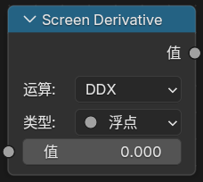
Feature¶
Gets differences between neighboring pixels in screen space:
-
DDX: Screen-space derivative in the X direction -
DDY: Screen-space derivative in the Y direction -
DDXY: Combination ofDDXandDDY(DDX + DDY)
Portal In / Portal Out¶
Entry¶
-
Add > Layout > Portal In -
Add > Layout > Portal Out

Feature Description¶
These are “portal” nodes used to organize node links.
Their workflow can be understood as:
-
Portal In: Store a named, typed value in the current node tree -
Portal Out: Retrieve that value later by name within the same node tree
Other Notes¶
-
Creating a new
Portal Inautomatically generates a unique name. -
Portal Outhas a magnifier button that can jump to the matchingPortal Inlocation.
Limits¶
-
Only recognized inside the same shader node tree.
-
Does not support crossing different node trees.
-
Does not automatically pass through node groups.
-
Inputs with the same name should keep only one source.
2. Eevee Object Material Nodes¶
Render Texture¶
Entry¶
Add > Texture > Render Texture
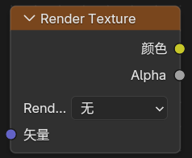
Purpose¶
Reads a Render Textures entry configured earlier in the scene.
Inputs / Outputs¶
-
Input:
Vector -
Outputs:
Color,Alpha
Screenspace Info¶
Entry¶
Add > Input > Screenspace Info
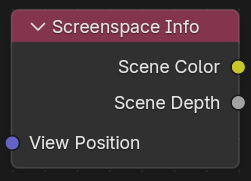
Inputs / Outputs¶
-
Input:
View Position(camera-space position) -
Outputs:
Scene Color(scene color),Scene Depth(scene depth)
Purpose¶
Gets the contents of the current render buffer color or depth.

Usage Notes¶
-
Raytracingmust be enabled in render settings -
Set material
Render MethodtoDithered -
Enable
Raytraced Transmissionin material options -
The default
View Positioninput ispositiontransformed into camera space, then with the z-axis inverted

World Environment¶
Entry¶
Add > Input > World Environment
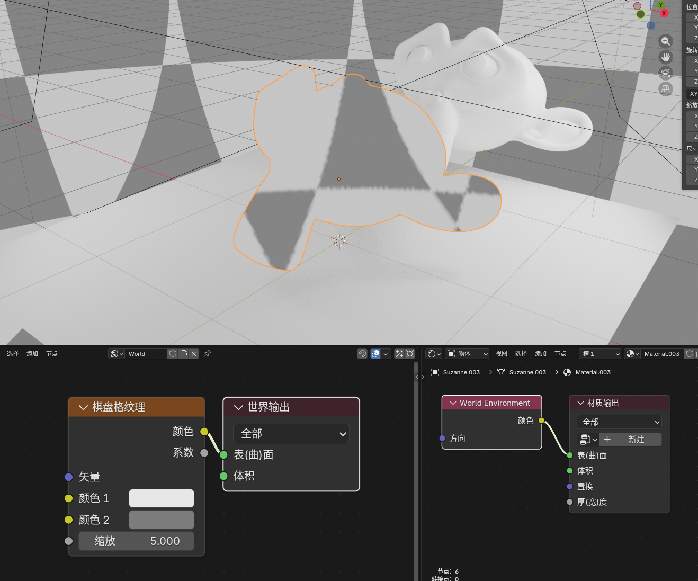
Inputs / Outputs¶
-
Input:
Direction(sampling direction) -
Output:
Color(environment color)
Purpose¶
Directly samples the Eevee world environment color without depending on whether any geometry exists behind the screen.
Notes¶
- Reads the world lighting probe color; probe resolution can be adjusted in the world environment
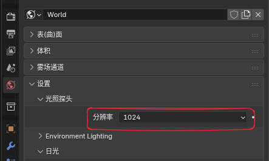
-
If
Directionis not connected, the current surface view direction is used by default -
If
Directionis connected, the world environment can be sampled in the specified direction
World To Tangent¶
Entry¶
Add > Utilities > Vector > World To Tangent

Inputs / Outputs¶
-
Input:
Vector(world-space direction) -
Output:
Vector(tangent-space direction)
Purpose¶
Converts a world-space direction vector into the tangent space of the current surface.
Notes¶
- A
UV Mapcan be specified in the node panel, and the tangent of that UV is used as the transform basis.
Basis Transform¶
Entry¶
Add > Utilities > Vector > Basis Transform

Inputs / Outputs¶
-
Input:
Vector(point, direction, or normal to transform) -
Input:
Origin(origin of the custom basis, used only inPointmode) -
Input:
X Axis,Y Axis,Z Axis(custom basis axes) -
Output:
Vector(transformed result)
Purpose¶
Uses origin + three basis axes inside material nodes to perform custom coordinate-system transforms. This is useful when there is no matrix input type available and you still need to process points, direction vectors, or normals.
Panel Options¶
-
Direction-
To Basis: Interpret the input from world / current coordinates into the custom basis -
From Basis: Convert the input from custom basis coordinates back to external coordinates
-
-
Type-
Point: IncludesOrigintranslation -
Vector: Only transforms direction and length, without translation -
Normal: Transforms following normal rules and normalizes before output
-
-
Basis Input-
XYZ: Use all three input axes directly -
XY/XZ/YZ: Use only two axes; the third axis is generated automatically by cross product
-
-
Orthonormalize-
When enabled, input axes are orthogonalized and normalized. This is more suitable for tangent space or local orientation bases
-
When disabled, input axis lengths are preserved, which can be used for basis transforms with scaling
-
-
Fallback-
Pass Through: Output the original input when the basis degenerates -
Zero: Output0, 0, 0when the basis degenerates
-
SDF Primitive¶
Entry¶
Add > Texture > SDF Primitive

Output¶
Distance
Purpose¶
Generates signed distance field (SDF) base shapes directly inside material nodes. It is useful for procedural masks, silhouettes, shape transitions, and as the starting point for boolean-style combinations.
Main Modes¶
- 3D shapes:
Sphere,Box,Torus,Cone,Point Cone,Cylinder,Point Cylinder,Capsule / Line,Octahedron,Hex Prism,Hex Prism Incircle,Plane,Solid Angle,Pyramid,Disc,3D Circle - 2D shapes:
Circle,Rectangle,Ellipse,Triangle,Pentagon,Hexagon,Isosceles Triangle,Trapezoid,Rhombus - Stylized 2D shapes:
Star,Heart,Pie,Arc,Moon,Vesica,Cross,Rounded X,Horseshoe,Round Joint,Flat Joint - Curve / segment shapes:
Line,Corner,Quadratic Bezier,Point Triangle,Quad,Parabola,Parabola Segment,Uneven Capsule
Input Notes¶
- The fixed base input is
Vector - Other sockets are shown and renamed dynamically per mode. Common parameters include
Size,Radius,Angle,Roundness,Linewidth,PointtoPoint_003, andValue1toValue4 - The node panel provides
ModeandInvert
Usage Notes¶
- The output is a distance value, not a color
- It is typically combined with nodes such as
Math,ColorRamp,Map Range, andSDF Operatorto turn the field into a mask or final shape Invertflips the inside / outside relationship directly, which is useful for turning the same shape into a hole or shell
SDF Operator¶
Entry¶
Add > Converter > SDF Operator
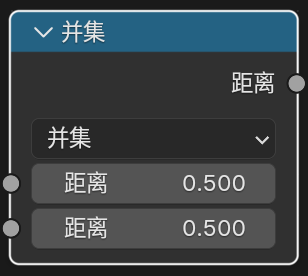
Output¶
Distance
Purpose¶
Combines, trims, and reshapes one or two SDF distance fields so multiple primitives can be assembled into more complex results.
Main Operations¶
- Single-input operations:
Dilate,Onion,Annular,Mask,Flatten,Invert,Hermite Pulse - Two-input operations:
Blend,Exclusion XOR,Divide,Pipe,Engrave,Groove,Tongue - Union family:
Union,Smooth Union,Round Union,Columns Union,Stairs Union,Chamfer Union - Intersection family:
Intersect,Smooth Intersect,Round Intersect,Columns Intersect,Stairs Intersect,Chamfer Intersect - Difference family:
Difference,Smooth Difference,Round Difference,Columns Difference,Stairs Difference,Chamfer Difference
Input Notes¶
- Base inputs include
Distance,Distance_001,Value,Value_001, andCount - The visible socket names and counts change automatically with
Operation Maskexposes an extraInverttoggle
Usage Notes¶
- A common workflow is to build several shapes with
SDF Primitive, then combine them withSDF Operatorthrough union, intersection, or difference Smooth,Round,Chamfer,Stairs, andColumnsare useful for more stylized boolean transitions- The node still outputs a distance value, so it usually needs a threshold, color remap, or alpha control afterward
SDF Vector Operator¶
Entry¶
Add > Utilities > Vector > SDF Vector Operator
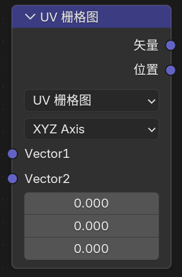
Outputs¶
-
Vector -
Position -
Value
Purpose¶
Preprocesses the coordinate, UV, or vector domain used by SDF workflows. Instead of generating a distance field directly, it rewrites the sampling space before the data reaches SDF Primitive.
That makes it useful for workflows such as:
- mirror or repeat the domain first
- then generate the primitive in that modified space
- then combine the resulting distance fields with
SDF Operator
Main Operation Groups¶
Plane Reflect,Mirror,Polar,Repeat Infinite,Repeat Infinite Mirror,Repeat Finite,Octant-
These modes handle reflection, symmetry, radial segmentation, and repeated spatial cells
-
Swizzle,Rotate,Spin,Extrude,Twist,Swirl,Pinch Inflate,Radial Shear,Bend -
These modes reorder or deform the coordinate system itself
-
UV Rotate,UV Scale,UV Grid,UV Random Rotate,UV Random Flip,UV Tileset -
These modes are focused on UV tiling, local UV transforms, and per-cell variation
-
Map -1-1,Map -0.5-0.5,Map 0-1 - These modes quickly convert between normalized UV ranges and the centered ranges often used in SDF setups
Mode Reference¶
Plane Reflect- Reflects the domain using a custom plane normal and offset
-
Valuecan be used as a helper mask for which side of the plane is active -
Mirror - Mirrors space across an axis-aligned plane controlled by the selected
Axis Spacingcontrols the reference interval-
Positionexposes an auxiliary mirrored / cell position -
Polar - Rewrites planar space into repeated angular sectors around the origin
-
Useful for radial motifs, petals, emblems, and gear-like repetition
-
Repeat Infinite -
Repeats the domain endlessly using
Spacing -
Repeat Infinite Mirror -
Repeats endlessly while mirroring every second cell, which helps neighboring boundaries line up more naturally
-
Repeat Finite -
Similar to infinite repeat, but constrained by
Count -
Octant -
Folds the domain into an octant / symmetric wedge for quick symmetrical constructions
-
Swizzle -
Reorders axis channels such as
XYZ,XZY, orYZX -
Rotate -
Rotates the domain around the selected main axis
-
Spin - Applies an axis-based spin style coordinate offset
-
Useful for rotational motifs and axial distortion
-
Extrude - Turns a 2D distance domain into a thickness along the third axis
-
Valueoutputs an internal-distance helper value -
Twist -
Twists the domain along the chosen axis
-
Swirl - Creates a vortex-like distortion around a center
-
Center,Offset,Strength, andRadiuscontrol the affected region -
Pinch Inflate -
Compresses or inflates space around a central region
-
Radial Shear -
Applies radial shear, useful for stronger rotational distortion patterns
-
Bend -
Bends the domain along the selected axis
-
UV Rotate -
Rotates UV coordinates around
Center -
UV Scale -
Scales UV coordinates around the UV center
-
UV Grid - Splits 0-1 UV space into a regular grid
Vectoroutputs the local UV inside the current cell-
Positionoutputs the cell coordinate for downstream indexing or randomization -
UV Random Rotate -
Uses the input
Positionto pick a 90-degree random rotation per cell -
UV Random Flip -
Uses the input
Positionto randomly flip or rotate each cell -
UV Tileset - Remaps the current UV into a sub-tile inside a larger texture sheet
-
Indexpicks the tile,Paddingcontrols margins, andScaleadjusts tile-space zoom -
Map -1-1 -
Remaps
0-1UV into-1 to 1 -
Map -0.5-0.5 -
Remaps
0-1UV into-0.5 to 0.5 -
Map 0-1 - Remaps a centered SDF-style range back into standard UV space
Bevel¶
Entry¶
Add > Input > Bevel
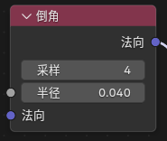
Inputs / Outputs¶
-
Input:
Radius(bevel radius),Normal(surface normal hint) -
Output:
Normal(approximated beveled normal)
Panel Option¶
Samples(higher sample counts improve quality but cost more performance)
Purpose¶
Generates an approximate beveled normal in Eevee so hard edges can look smoother.
Notes¶
-
Cyclesstill uses the original true geometric bevel algorithm -
Eeveehere uses a same-object screen-space approximation -
The result depends on the current view, depth buffer, and visible neighborhood, and is not equivalent to the true
BevelinCycles
Curvature¶
Entry¶
Add > Input > Curvature
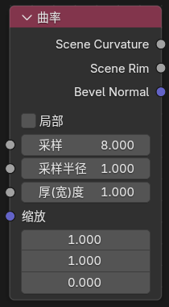
Inputs¶
-
Samples -
Sample Radius -
Thickness -
Scale
Outputs¶
-
Scene Curvature: Curvature extracted from screen space -
Scene Rim: Rim-light style edge output
Panel Option¶
Local: Ignore depth from other objects
Notes¶
A curvature node ported from Goo Engine that provides curvature and rim outputs.
Shader Info¶
Entry¶
Add > Input > Shader Info
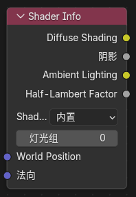
Inputs¶
-
World Position: World-space position (defaults to the current position) -
Normal: Surface normal (defaults to the current smooth normal)
Outputs¶
-
Diffuse Shading: Lambert lighting -
Shadow: Shadow mask -
Ambient Lighting: Indirect ambient light from the world environment and lighting probes -
Half-Lambert Factor: Half-Lambert lighting term
Notes¶
-
Shadow-
Supports selectable shadow modes
-
Built-in: Default mode, using Eevee's original shadow calculation -
Soft Filtered: Turns binary dithered shadows into smoother grayscale penumbra
-
-
The node panel includes a
Lightgroupproperty- Only lights with the same
Lightgroup IDparticipate in thisShader Infonode's direct lighting and shadow evaluation
- Only lights with the same
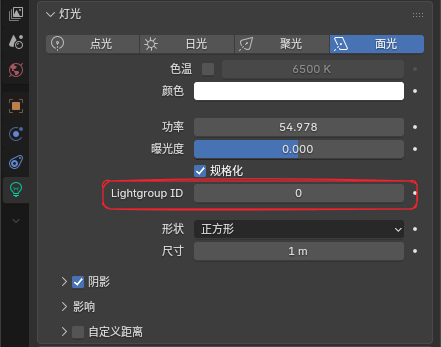
- The current implementation excludes the world sun from these outputs so HDRIs or “sun” contributions embedded in the world environment do not contaminate the direct result.
Light Info¶
Entry¶
Add > Input > Light Info
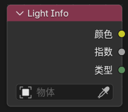
Feature Description¶
Reads information from a specified light.
Fixed Outputs¶
-
Color: Light color -
Power: Light intensity -
Type: Light type-
-1: No light specified -
0: Point -
1: Sun -
2: Spot -
3: Area
-
Outputs That Appear Depending on Light Type¶
-
Position: Light world position -
Direction: Light direction -
Radius: Light radius -
Spot Size: Spot light size -
Sun Angle: Sun angle
Notes¶
- For per-light processing, use
For Each LightinsideNPR Treeinstead.
Scene Color¶
Entry¶
Add > Input > Scene Color
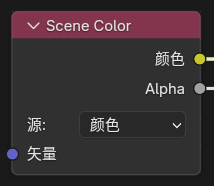
Available only in the Filter domain.
Purpose¶
Reads the current Eevee scene buffer. The Source can be switched in the node panel:
-
Color: Reads the final rendered scene color -
Depth: Reads linear depth -
Normal: Reads rendered normals -
Position: Reads world-space positions
Inputs / Outputs¶
-
Input:
Vector -
Outputs:
Color,Alpha